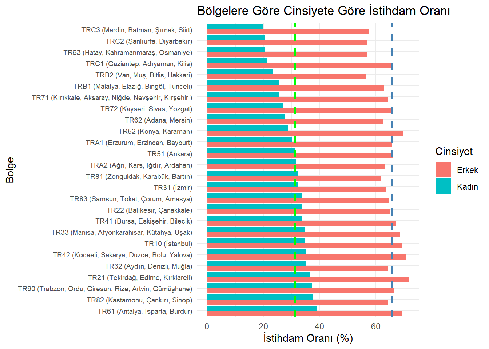
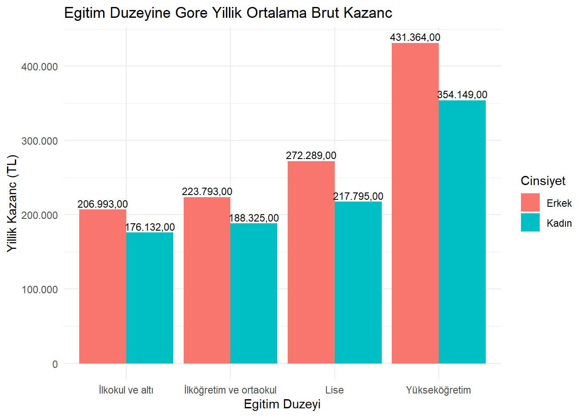
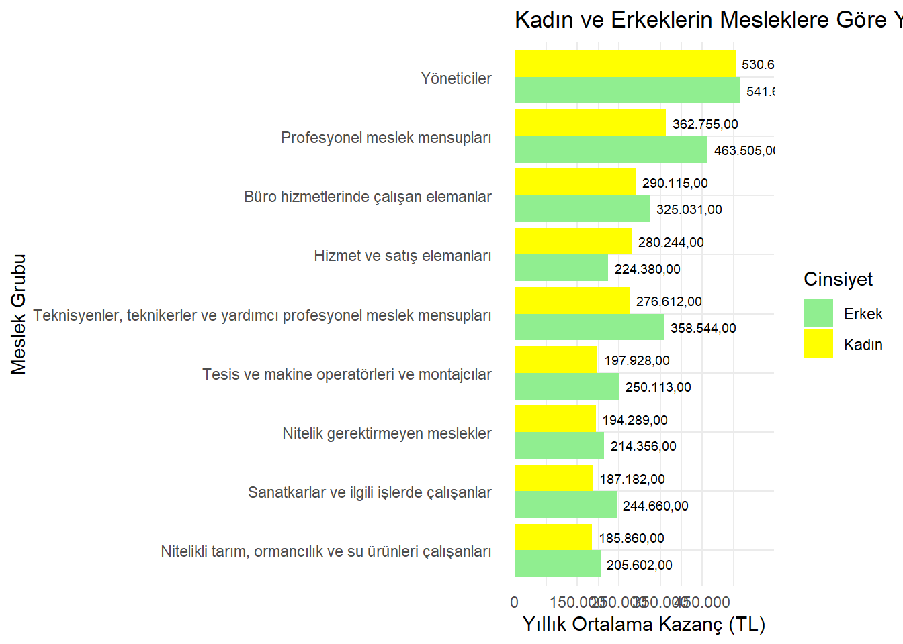
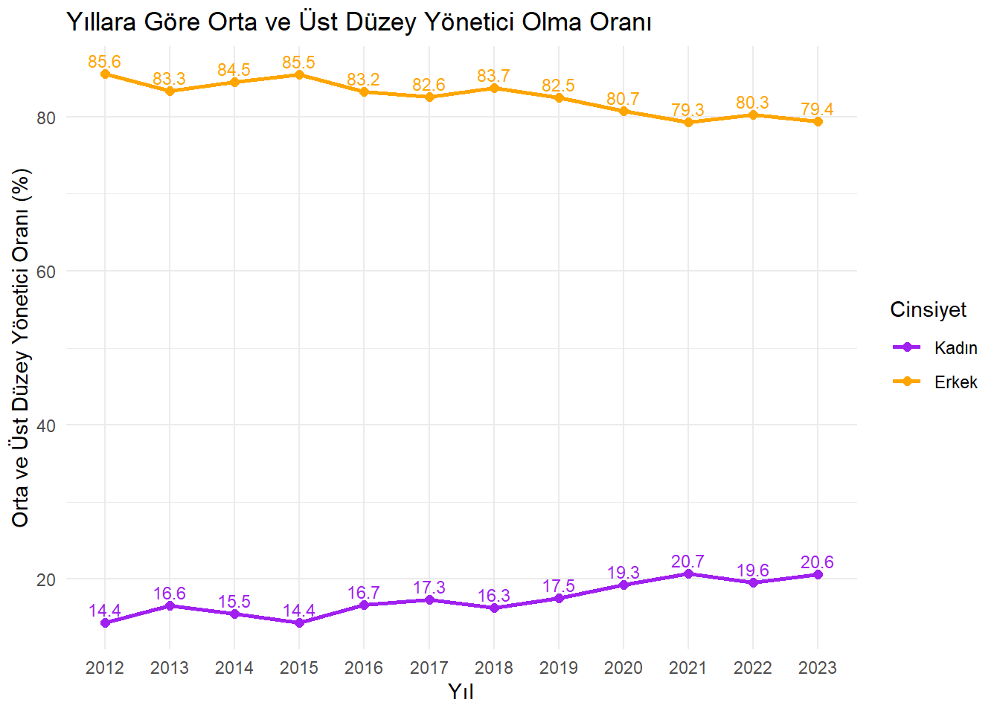
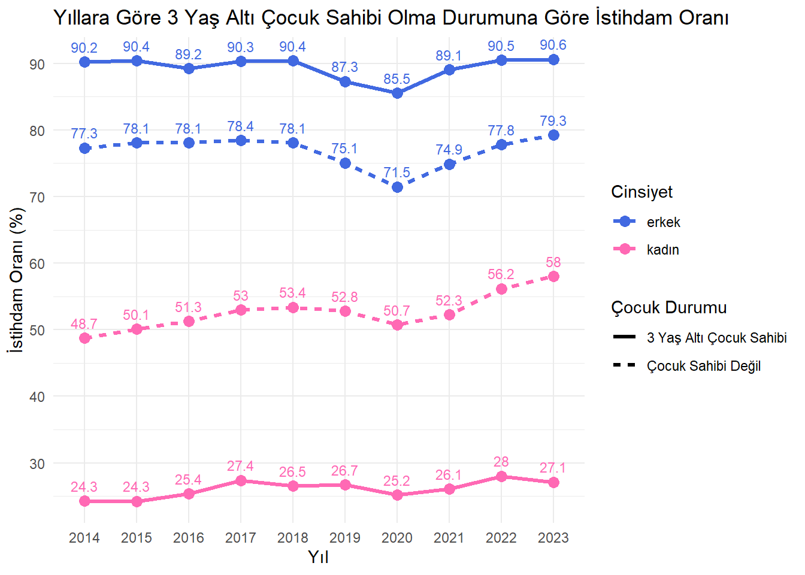

Proje sayfamıza hoş geldiniz. Proje faaliyetlerimizden haberdar olmak için bu alanı takipte kalın.
1. Project Overview and Scope
Kadınların sosyoekonomik durumu; işgücüne katılım oranı, gelir seviyesi, kamusal temsiliyet, eğitim düzeyi ve bölgesel farklılıklar gibi çok boyutlu faktörlerden etkilenmektedir. Özellikle ataerkil toplumsal yapının baskın olduğu bölgelerde, kadınlar ekonomik ve sosyal yaşama katılımda hem yapısal hem de kültürel engellerle karşılaşmaktadır. Bu durum yalnızca bireysel refahı sınırlamakla kalmamakta, aynı zamanda ülkenin genel kalkınma potansiyelini de azaltmaktadır. Bu proje, kadınların Türkiye’deki sosyoekonomik durumunu, eğitim düzeyi, gelir seviyesi ve toplumsal roller gibi çok boyutlu göstergeler üzerinden veri temelli bir yaklaşımla analiz etmeyi amaçlamaktadır. Projenin temel çerçevesi; kadınların eğitim düzeyi ile gelir arasındaki ilişkinin incelenmesi, işgücüne katılım oranlarının bölgesel farklılıklar bağlamında analiz edilmesi ve elde edilen veriler ışığında kamu politikalarına yönelik önerilerin geliştirilmesini içermektedir.
2. Data
İstatistiklerle Kadın – 2024
2.1 Data Source
Bu çalışmada kullanılan veriler, Türkiye İstatistik Kurumu (TÜİK) veri tabanından elde edilmiştir. Veriler, TÜİK’in çevrimiçi veri portalından .xlsx formatında indirilmiş ve analizde kullanılacak şekilde düzenlenmiştir.
2.2 General Information About Data
Çalışmada; kadınların eğitim düzeyi, işgücüne katılım oranı, bölgesel düzeyde istihdam oranları, ücret farklılıkları, işgücü içindeki konumları gibi değişkenler ele alınmış, aynı değişkenler üzerinden erkeklerle karşılaştırmalı analizler yapılmıştır.
2.3 Reason of Choice
Bu çalışmada kullanılan veriler, kamuya açık ve ücretsiz olarak sunulan TÜİK veri tabanından elde edilmiştir. TÜİK, uluslararası standartlara uygunluğu ve ulusal düzeyde temsili veri sağlayabilme kapasitesi nedeniyle tercih edilmiştir.
2.4 Preprocessing
İstatistiklerle Kadın-2024 veri kümesinden analiz için seçilen veriler şunlardır: • Cinsiyet ve İBBS 2. Düzeye göre temel işgücü göstergeleri • Eğitim durumuna göre yıllık ortalama brüt kazanç • Meslek grubuna göre yıllık ortalama brüt kazanç • Cinsiyete göre üst ve orta düzey yönetici pozisyonlarındaki bireylerin oranı • Cinsiyete göre 25-49 yaş grubunda olup hane halkında 3 yaşın altında çocuğu olan ve çocuğu olmayan kişilerin istihdam oranı • Cinsiyet ve eğitim durumuna göre işgücü durumu
#3.İşgücüne Bakış #3.1. Bölgelere Göre İstihdam Oranı
2023 yılında 15 ve daha yukarı yaştaki kadın nüfusun istihdam oranı %31,3, erkek nüfusun istihdam oranı ise %65,7 olmuştur. İBBS 2.Düzeye göre en yüksek kadın istihdam oranı, %38,9 ile TR61 (Antalya, Isparta, Burdur) bölgesinde, en düşük kadın istihdam oranı ise %19,8 ile TRC3 (Mardin, Batman, Şırnak, Siirt) bölgesinde gerçekleşmiştir. Kadın istihdamının en az olduğu beş bölgeye bakıldığında neredeyse tamamının Doğu ve Güneydoğu bölgelerindeki illerden oluştuğu dikkat çekmektedir.
# Gerekli paketler# install.packages("tidyr")# install.packages("readr")# install.packages("dplyr")# install.packages("readxl")# install.packages("ggplot2")library(readxl)library(ggplot2)library(tidyr)library(dplyr)
Attaching package: 'dplyr'
The following objects are masked from 'package:stats':
filter, lag
The following objects are masked from 'package:base':
intersect, setdiff, setequal, union
library(readr)# Veriyi okuveri <-read_excel("bolge_duzeyi.xlsx")# Kadın istihdam oranına göre sıralama için sıralı bölge listesi oluştursirali_bolgeler <- veri %>%filter(cinsiyet =="Kadın") %>%arrange(desc(istihdam_orani)) %>%pull(bolge)# Faktör olarak ayarla (sıralı grafik için)veri$bolge <-factor(veri$bolge, levels = sirali_bolgeler)# Türkiye ortalamalarıortalama_kadin <-31.3ortalama_erkek <-65.7# Grafik oluşturggplot(veri, aes(x = istihdam_orani, y = bolge, fill = cinsiyet)) +geom_bar(stat ="identity", position ="dodge") +geom_vline(xintercept = ortalama_kadin, color ="green", linetype ="dashed", size =1) +geom_vline(xintercept = ortalama_erkek, color ="steelblue", linetype ="dashed", size =1) +labs(title ="Bölgelere Göre Cinsiyete Göre İstihdam Oranı",x ="İstihdam Oranı (%)", y ="Bolge", fill ="Cinsiyet") +theme_minimal() +theme(axis.text.y =element_text(size =7))
Warning: Using `size` aesthetic for lines was deprecated in ggplot2 3.4.0.
ℹ Please use `linewidth` instead.

#3.2. Eğitim Durumuna Göre Yıllık Kazanç Durumu
2023 yılı verilerine göre kazanç düzeylerinin hem erkeklerde hem de kadınlarda eğitim durumu ile birlikte yükseldiği görülmüştür. Eğitim durumuna göre en yüksek yıllık ortalama brüt kazancı yükseköğretim eğitim düzeyine sahip olanlar elde etmiş olup, bu eğitim düzeyinde yıllık ortalama brüt kazanç erkeklerde 431 bin 364 TL, kadınlarda ise 354 bin 149 TL olmuştur. Tüm seviyelerde erkek ve kadın aynı eğitim düzeyinde olmasına rağmen erkeklerin yıllık ortalama brüt kazancının kadınlardan fazla olduğu görülmektedir.
library(readxl)library(ggplot2)library(tidyr)library(dplyr)library(readr)veri <-read_excel("yillik_kazanc.xlsx")# Sütun adlarını ASCII karakterlerine dönüştürnames(veri) <-iconv(names(veri), from ="", to ="ASCII//TRANSLIT")ggplot(veri, aes(x =reorder(egitim_duzeyi, yillik_ort_brut_kazanc), y = yillik_ort_brut_kazanc, fill = cinsiyet)) +geom_bar(stat ="identity", position ="dodge") +geom_text(aes(label =paste0(format(yillik_ort_brut_kazanc, big.mark =".", decimal.mark =","), ",00")), position =position_dodge(width =0.9), vjust =-0.3, size =3) +scale_y_continuous(labels = scales::comma_format(big.mark =".", decimal.mark =",")) +labs(title ="Egitim Duzeyine Gore Yillik Ortalama Brut Kazanc",x ="Egitim Duzeyi", y ="Yillik Kazanc (TL)", fill ="Cinsiyet") +theme_minimal()

#3.3.Meslek Gruplarına Göre Kazanç Durumu
2023 yılı verilerine göre, kadınlarda en yüksek yıllık ortalama brüt kazancı 530.663,00 TL ile yöneticiler meslek grubunda çalışanlar elde etmiştir. Yönetici pozisyonunda çalışan erkek ve kadınlar arasında yıllık ortalama kazançlarında farklılığın düşük olduğu dikkat çekmektedir. En düşük yıllık ortalama brüt kazanç ise 185.860,00 TL ile nitelikli tarım, ormancılık ve su ürünleri çalışanları grubunda gerçekleşmiştir. Yalnızca “Hizmet ve servis elemanları” meslek grubunda çalışan kadınlar aynı meslek grubunda çalışan erkeklere göre daha fazla yıllık ortalama kazanç elde etmiş, diğer tüm meslek gruplarında erkekler kadınlardan daha fazla yıllık ortalama kazanç sağlamıştır.
The following object is masked from 'package:readr':
col_factor
# Veriyi okuveri <-read_excel("meslek_gruplarina_gore_kazanc.xlsx")# Ortalama kazancı cinsiyet ve meslek bazında hesaplaveri <- veri %>%group_by(meslek, cinsiyet) %>%summarize(yillik_ort_kazanc =mean(yillik_ort_kazanc, na.rm =TRUE), .groups ="drop")# Kadınlara göre meslek sıralamasısirali_meslekler <- veri %>%filter(cinsiyet =="Kadın") %>%arrange(yillik_ort_kazanc) %>%pull(meslek)# Sıralı faktör olarak ayarlaveri$meslek <-factor(veri$meslek, levels = sirali_meslekler)# Grafikggplot(veri, aes(x = meslek, y = yillik_ort_kazanc, fill = cinsiyet)) +geom_bar(stat ="identity", position ="dodge") +geom_text(aes(label =format(yillik_ort_kazanc, big.mark =".", decimal.mark =",", nsmall =2)),position =position_dodge(width =0.9), hjust =-0.1, size =2.5) +# ← etiketler çubuğun sağındacoord_flip() +scale_fill_manual(values =c("Kadın"="yellow", "Erkek"="lightgreen")) +scale_y_continuous(breaks =c(0, 150000, 250000, 350000, 450000),labels =label_number(big.mark =".", decimal.mark =",", accuracy =1),expand =expansion(mult =c(0, 0.15)) # ← boşluk bırak, çubukların sonunda etiketler için alan yarat ) +labs(title ="Kadın ve Erkeklerin Mesleklere Göre Yıllık Ortalama Kazançları",x ="Meslek Grubu", y ="Yıllık Ortalama Kazanç (TL)", fill ="Cinsiyet") +theme_minimal() +theme(axis.text.y =element_text(margin =margin(r =10)))

#3.4.Üst ve Orta Düzey Yönetici Pozisyonundaki Görünüm
Üst ve orta düzey yönetici pozisyonundaki kadın oranı 2012 yılında %14.4 iken 2023 yılında %20.6 olmuştur. Bu oran erkeklerde 2012 yılında %85.6 iken 2023 yılında %79.4 olarak gerçekleşmiştir. 2012-2023 yıllarındaki orta ve üst düzey yönetici oranları incelendiğinde tüm yıllarda kadınların yönetici pozisyonunda çok az yer bulabildiği görülmektedir.
library(readxl)library(ggplot2)library(tidyr)library(dplyr)library(readr)veri <-read_excel("yonetici.xlsx")names(veri) <-iconv(names(veri), from ="", to ="ASCII//TRANSLIT")veri <- veri %>%mutate(cinsiyet =as.character(cinsiyet),orta_ust_yonetici_orani =as.numeric(orta_ust_yonetici_orani) ) %>%filter(cinsiyet %in%c("Kadın", "Erkek")) %>%mutate(cinsiyet =factor(cinsiyet, levels =c("Kadın", "Erkek")))ggplot(veri, aes(x =as.factor(yil), y = orta_ust_yonetici_orani, color = cinsiyet, group = cinsiyet)) +geom_line(size =1) +geom_point(size =2) +geom_text(aes(label =sprintf("%.1f", orta_ust_yonetici_orani)),vjust =-0.5,size =3,show.legend =FALSE# ← İşte hayat kurtaran satır ) +labs(title ="Yıllara Göre Orta ve Üst Düzey Yönetici Olma Oranı",x ="Yıl",y ="Orta ve Üst Düzey Yönetici Oranı (%)",color ="Cinsiyet") +scale_color_manual(values =c("Kadın"="purple", "Erkek"="orange")) +theme_minimal()

#3.5.Çocuğa Bağlı İstihdam Oranı 2023 yılında hanesinde 3 yaşın altında çocuğu olan 25-49 yaş grubundaki kadınların istihdam oranının %27,1, erkeklerin istihdam oranının ise %90,6 olduğu görülmüştür. 2023 yılında çocuk sahibi olmayan kadınların istihdam oranı %58 iken, erkekler için bu oran %79.3’tür. 2014-2023 yılları için veriler incelendiğinde çocuk sahibi olmayan kadınların istihdam oranının, 3 yaş altı çocuk sahibi olan kadınlara kıyasla tüm yıllar için neredeyse iki katı olduğu görülmektedir. Bu durum erkeklerde ters etki yaratmaktadır. 3 yaş altı çocuk sahibi olan erkeklerin istihdam oranı, çocuk sahibi olmayanlara göre daha fazladır.
library(readxl)library(ggplot2)library(tidyr)library(dplyr)library(readr)# Veriyi okuveri <-read_excel("cocuga_bagli_istihdam_orani.xlsx")# Veriyi düzenleveri_long <- veri %>%pivot_longer(cols =c("3yasalti_cocuk_olan_istihdam_orani", "cocuk_olmayan_istihdam_orani"), names_to ="cocuk_durumu", values_to ="istihdam_orani") %>%mutate(cocuk_durumu =recode(cocuk_durumu, "3yasalti_cocuk_olan_istihdam_orani"="3 Yaş Altı Çocuk Sahibi","cocuk_olmayan_istihdam_orani"="Çocuk Sahibi Değil"))# Grafik oluşturmaggplot(veri_long, aes(x =as.factor(yil), y = istihdam_orani, color = cinsiyet, linetype = cocuk_durumu, group =interaction(cinsiyet, cocuk_durumu))) +geom_line(size =1.2) +geom_point(size =3) +geom_text(aes(label =round(istihdam_orani, 1)), vjust =-0.9, size =3,show.legend =FALSE) +labs(title ="Yıllara Göre 3 Yaş Altı Çocuk Sahibi Olma Durumuna Göre İstihdam Oranı",x ="Yıl",y ="İstihdam Oranı (%)",color ="Cinsiyet",linetype ="Çocuk Durumu") +scale_x_discrete(breaks =unique(veri_long$yil)) +scale_y_continuous(breaks =seq(0, 90, by =10)) +theme_minimal() +scale_color_manual(values =c("royalblue", "hotpink"))

4. Analiz
Çalışmanın temel amacı, Türkiye’de işgücü piyasasında eğitim seviyesine göre cinsiyet farklılıklarını belirlemektir. Bu kapsamda, işgücü verileri kullanılarak üç temel model oluşturulmuştur:
-İstihdam Oranı Modeli -İşsizlik Oranı Modeli -İşgücüne Katılım Oranı Modeli
4.1. Veri Seti ve Kullanılan Değişkenler
Analizde kullanılan veri seti, Türkiye’de işgücü piyasasına ait eğitim düzeyi ve cinsiyete göre istihdam, işsizlik ve işgücüne katılım oranlarını içermektedir. Eğitim düzeyi beş kategoriye ayrılmıştır:
Okuryazar Değil
Lise Altı
Lise
Mesleki veya Teknik Lise
Yükseköğretim
Bu kategoriler sırasıyla 1’den 5’e kadar kodlanmıştır. Cinsiyet değişkeni ise “Kadın” ve “Erkek” olarak tanımlanmıştır.
4.2. Modelleme Yaklaşımı
Analizde, cinsiyet ve eğitim düzeyi arasındaki etkileşimi gözlemlemek için doğrusal regresyon modelleri kullanılmıştır. Aşağıda modellerin detayları verilmiştir:
4.2.1. İstihdam Oranı Modeli
Bu modelde, istihdam oranı bağımlı değişken olarak alınmış, eğitim düzeyi ve cinsiyet bağımsız değişken olarak modele dahil edilmiştir. Model, eğitim düzeyi ve cinsiyet arasındaki etkileşimi de göz önünde bulunduracak şekilde formüle edilmiştir: İstihdam Oranı = β0 + β1 × Eğitim Düzeyi + β2 × Cinsiyet + β3 × (Eğitim Düzeyi × Cinsiyet) + ϵ
4.2.2. İşsizlik Oranı Modeli
Bu modelde işsizlik oranı bağımlı değişken olarak kullanılmış ve benzer şekilde eğitim düzeyi ile cinsiyet arasındaki etkileşim dikkate alınarak analiz edilmiştir: İstihdam Oranı = β0 + β1 × Eğitim Düzeyi + β2 × Cinsiyet + β3 × (Eğitim Düzeyi × Cinsiyet) + ϵ
4.2.3. İşgücüne Katılım Oranı Modeli
Bu modelde bağımlı değişken olarak işgücüne katılım oranı kullanılmış ve diğer modellerde olduğu gibi eğitim düzeyi ile cinsiyet arasındaki etkileşim de modele dahil edilmiştir: İstihdam Oranı = β0 + β1 × Eğitim Düzeyi + β2 × Cinsiyet + β3 × (Eğitim Düzeyi × Cinsiyet) + ϵ
# Excel dosyasını okuveri <-read_excel("Isgucu_verisi.xlsx")# Değişken adlarını görnames(veri)
Registered S3 methods overwritten by 'ggpp':
method from
heightDetails.titleGrob ggplot2
widthDetails.titleGrob ggplot2
Attaching package: 'ggpp'
The following object is masked from 'package:ggplot2':
annotate
library(patchwork)# Renk paleti ve temamy_colors <-c("Kadın"="darkred", "Erkek"="steelblue")my_theme <-theme_minimal(base_size =12)my_formula <- y ~ x# 1. İstihdam Oranıg1 <-ggplot(veri, aes(x = egitim_sira, y = istihdam_orani, color = cinsiyet)) +geom_point(size =3) +geom_smooth(method ="lm", se =FALSE, linewidth =1.2) +scale_color_manual(values = my_colors) +scale_x_continuous(breaks =1:5,labels =c("Okuryazar değil", "Lise altı", "Lise", "Mesleki", "Yükseköğretim") ) +labs(title ="Egitim Duzeyine Gore Istihdam Orani",x ="Egitim Duzeyi", y ="Istihdam Orani (%)", color ="Cinsiyet") + my_theme# 2. İşsizlik Oranıg2 <-ggplot(veri, aes(x = egitim_sira, y = issizlik_orani, color = cinsiyet)) +geom_point(size =3) +geom_smooth(method ="lm", se =FALSE, linewidth =1.2) +scale_color_manual(values = my_colors) +scale_x_continuous(breaks =1:5,labels =c("Okuryazar değil", "Lise altı", "Lise", "Mesleki", "Yükseköğretim") ) +labs(title ="Egitim Duzeyine Gore Issizlik Orani",x ="Egitim Duzeyi", y ="Issizlik orani (%)", color ="Cinsiyet") + my_theme# 3. Katılım Oranı#g3 <- ggplot(veri, aes(x = egitim_sira, y = isgucune_katilma_orani, color = cinsiyet)) +#geom_point(size = 3) +#geom_smooth(method = "lm", se = FALSE, linewidth = 1.2) +#scale_color_manual(values = my_colors) +#scale_x_continuous(# breaks = 1:5,#labels = c("Okuryazar değil", "Lise altı", "Lise", "Mesleki", "Yükseköğretim")#) +#labs(title = "Egitim Duzeyine Gore İsgucune Katilim Orani",# x = "Egitim Duzeyi", y = "Katilim Orani (%)", color = "Cinsiyet") +#my_theme# 3 grafiği üst üste tek sayfada gösterg1 / g2 +plot_layout(ncol =1)
`geom_smooth()` using formula = 'y ~ x'
`geom_smooth()` using formula = 'y ~ x'
5. Sonuçlar
Veri görselleştirmesi için eğitim düzeyine göre istihdam oranı, işsizlik oranı ve işgücüne katılım oranı grafiklerle sunulmuştur. Grafiklerde:
-Yatay eksende eğitim düzeyi (1-5 arası kodlanmış) -Dikey eksende istihdam oranı, işsizlik oranı ve işgücüne katılım oranı -Renklerle cinsiyet farklılıkları (Kadın: Kırmızı, Erkek: Mavi)
Grafiklerde kullanılan eğri çizgiler, doğrusal regresyon eğilimlerini göstermektedir. Her grafik, eğitim düzeyi arttıkça istihdam oranının yükseldiğini, işsizlik oranının düştüğünü ve işgücüne katılım oranının arttığını göstermektedir. Ancak, cinsiyetler arası farkın özellikle düşük eğitim seviyelerinde daha belirgin olduğu görülmüştür.
6. Sonuçlar ve Temel Bulgular
Bu analiz sonucunda, eğitim düzeyinin artmasının istihdam oranını pozitif yönde etkilediği, işsizlik oranını azalttığı ve işgücüne katılım oranını artırdığı tespit edilmiştir. Ayrıca, cinsiyet faktörünün özellikle düşük eğitim düzeylerinde belirgin farklılık oluşturduğu gözlemlenmiştir. Yükseköğretim seviyesinde kadın ve erkeklerin istihdam ve katılım oranları arasındaki fark azalmakta olup, bu durum eğitim düzeyinin cinsiyet eşitliği üzerinde pozitif bir etkisi olduğunu göstermektedir.
Bu bulgular, Türkiye’de işgücü piyasasında eğitim seviyesinin artırılmasının kadınların işgücüne katılımını ve istihdamını olumlu yönde etkileyeceğine dair önemli kanıtlar sunmaktadır. Bu nedenle, eğitim politikalarının kadınların istihdam edilebilirliğini artıracak şekilde planlanması gerekmektedir.